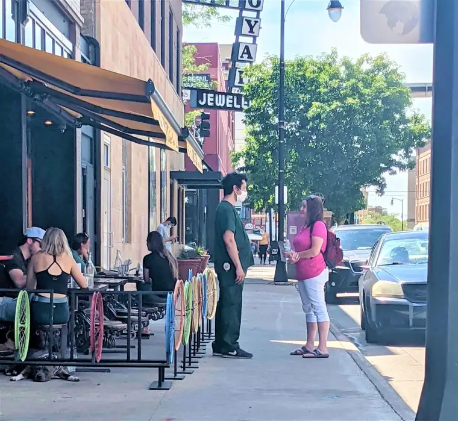

As the man in green scrubs emerged from our state’s only abortion facility, I was distracted by a couple who’d come by, asking us prayer advocates if we had any ailments needing healing, and if they could pray over us.
I, and others, soon formed a little circle to receive their prayers. But as the flash of green caught my eye, I quietly departed the small gathering, curious. “Excuse me,” I said to the worker as he walked down the sidewalk, away from our group, “Do you perform abortions?”

“Well, all of us there take part in abortion in one way or another,” he said. His forthrightness surprised me. “So, what do you do, exactly?” I asked. “I’m a phlebotomist, so I mostly do blood draws and make sure the clients are healthy.”
By this point, we’d both stopped walking and had paused in front of a nearby eatery. I could feel the stares of the patrons eating their tacos outside, just inches from us, but this seemed important enough to continue. It’s not everyday abortion workers willingly engage with us.
He was proud of his work helping women, he said, and made it abundantly clear he did not like how we judge and shame women. “Wouldn’t it be better to do something to help them from coming here in the first place, like educating them on birth control?”
I explained that many people are doing different things to address unplanned pregnancy, but those praying at the sidewalk were called specifically for this mission. As a mother of five children, and one who has lost another child through miscarriage, I explained, I understand the grief mothers go through in experiencing a child’s death, as well as the joy in having them; I couldn’t imagine any of my children not existing. So, I’d come to let other mothers know that if they don’t feel ready to have a child, support and help are within reach.
As he persisted in his accusations, I tried explaining our intentions, showing him some of the literature we give the women, encouraging him to consider our true aims, not just what he’d been told by others. Though he didn’t seem too open to my sharing, he wasn’t hostile, either. When I challenged him about his reason for being there – mentioning post-abortion trauma, and the women we’ve met who deeply regretted their abortion – he responded, “Well, it’s just a clump of cells.”
It surprised me to hear that old line. “You know, you are ‘just a clump of cells,’ too,” I offered. “We both are,” I added, offering, “What if a certain ‘clump of cells’ slated for abortion could have cured a horrible disease?” He paused. “I still don’t agree with you,” he asserted, “but that’s something to think about.”
It was a start. As we continued on, in a respectful manner, a longtime abortion worker walked quickly past us, turning to tell him, “You’re talking with someone who is hateful, by the way!” Having gone to Mass earlier and, asking God to keep me calm, I remained unruffled.
Later, when sharing about this exchange in a Facebook group for local Catholics, one member noted his surprise that a phlebotomist would use the “clump of cells” argument. “You’d think he, of all people, would know better.” Later, another remarked, “I thought the ‘clump of cells’ argument had been refuted long ago.” Indeed, it seemed that science and technology had disproved that false contention several decades ago.
Though I don’t know whether the abortion worker was moved by our discussion, I certainly was. That he stopped to talk at all indicates he may feel the need to justify what he does. I’d guess something in his soul isn’t settled. Here, I find a glimmer of hope.
I hope you’ll join me in praying for a phlebotomist, “J,” to come to know that God arranged every cell in his body in a unique, unrepeatable fashion. With God’s grace, may he turn away from abortion work to claim his true destiny, not of destruction, but undeniable delight in this exquisite, blessed thing called life.
[Note: I write about my experiences on the sidewalk Downtown Fargo on Wednesday, the day abortions happen at our state’s only abortion facility, for New Earth magazine — the official news publication of the Fargo Diocese. I hope you find “Sidewalk Stories” helpful in understanding the truth about abortion and how it plays out tragically each week here in Fargo, N.D. The preceding ran in New Earth’s July-August 2020 issue.]